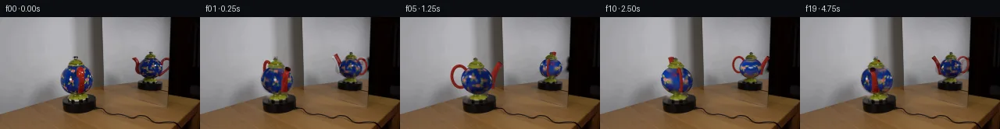

![首帧]()

Round 00
2026-11-05T13:55:39.033692+00:00像素候选变化代码 +407/−0inspection 更新
pixels 582efa27ba27cef0 · code a2a0e95fc1a1c8ae
查看本轮 generate.py 真实 diff
--- previous/generate.py
+++ current/generate.py
@@ -0,0 +1,407 @@
+"""Single-image continuation by local analytic geometry and photographic textures.
+No learned models, external scene sources, or external rendering engine.
+"""
+from pathlib import Path
+import json, math, base64, re
+import numpy as np
+import cv2
+from PIL import Image, ImageDraw
+from scipy.ndimage import map_coordinates, gaussian_filter, distance_transform_edt
+from artifact_io import save
+
+ROOT=Path(__file__).resolve().parent
+TMP=ROOT/'.tmp'; TMP.mkdir(exist_ok=True)
+SOURCE=np.asarray(Image.open(ROOT/'first_frame.png').convert('RGB'))
+SS=4
+ANGLE0=.17
+
+
+def poly(points):
+ m=np.zeros((144,256),np.uint8)
+ cv2.fillPoly(m,[np.asarray(points,np.int32)],255)
+ return m
+
+BODY_MAIN=poly([(98,61),(87,64),(81,69),(78,77),(78,86),(82,92),(89,97),(96,100),(105,100),(112,96),(117,90),(119,81),(117,72),(111,66),(104,62)])
+BODY_MIRROR=poly([(193,52),(184,54),(180,59),(178,65),(179,70),(184,75),(192,78),(200,77),(206,72),(207,65),(205,59),(201,55)])
+MAIN_SPOUT=poly([(100,64),(106,64),(109,68),(108,80),(108,90),(106,97),(101,100),(98,97),(99,85),(99,75),(97,68)])
+MIR_SPOUT=poly([(168,51),(174,51),(178,56),(180,64),(178,72),(175,74),(172,69),(173,58)])
+MIR_HANDLE=poly([(201,56),(207,53),(214,51),(217,54),(216,63),(215,68),(212,71),(207,75),(202,76),(202,71),(208,67),(212,61),(213,57),(209,57),(205,61)])
+MAIN_LID=poly([(92,51),(99,50),(101,54),(102,54),(105,56),(108,60),(106,63),(89,64),(86,60),(88,56),(94,54)])
+MIR_LID=poly([(190,46),(196,44),(197,48),(199,49),(201,52),(199,54),(187,53),(185,51),(189,49)])
+MAIN_FOOT=poly([(90,98),(103,98),(110,101),(112,105),(108,107),(91,108),(85,105),(87,101)])
+MIR_FOOT=poly([(186,77),(199,77),(202,80),(202,83),(186,83),(182,81)])
+
+# Erase only moving teapot silhouettes. Background remains the supplied photo.
+original_mask=np.maximum.reduce([BODY_MAIN,BODY_MIRROR,MAIN_SPOUT,MIR_SPOUT,MIR_HANDLE,MAIN_LID,MIR_LID,MAIN_FOOT,MIR_FOOT])
+original_mask=cv2.dilate(original_mask,np.ones((3,3),np.uint8))
+# Protect the fixed black turntables below the ceramic feet.
+original_mask[109:,:]=0
+original_mask[84:110,160:220]=0
+plate=cv2.inpaint(SOURCE,original_mask,4,cv2.INPAINT_TELEA)
+# Restore the vertical wall/post gradient where a large removed silhouette
+# prevents a small-radius inpaint from carrying the straight post boundary.
+yy,xx=np.mgrid[:144,:256]
+for x in range(77,121):
+ upper=SOURCE[35:49,x].astype(float)
+ bg=upper.mean(0)
+ for y in range(49,99):
+ if original_mask[y,x] and y < 124.5-.275*x:
+ if x>=96:
+ # The vertical post has almost constant color; its left edge
+ # descends into a softer shadow at the bottom.
+ drop=max(0,y-65)*(.48 if x<116 else .21)
+ else:
+ drop=max(0,y-63)*.80
+ estimate=np.clip(bg-drop,0,255)
+ plate[y,x]=np.clip(.80*estimate+.20*plate[y,x],0,255)
+
+# The visible original ceramic gives two photographic surface observations.
+# Fill the near-camera spout occlusion before extracting blue-body decoration.
+clean_main=cv2.inpaint(SOURCE,MAIN_SPOUT,3,cv2.INPAINT_TELEA).astype(float)
+clean_mirror=SOURCE.astype(float)
+valid_main=distance_transform_edt(BODY_MAIN>0)
+valid_mirror=distance_transform_edt(BODY_MIRROR>0)
+
+class Camera:
+ def __init__(self,name,cx,cy,scale,az,elev,flip,tilt,box):
+ self.name=name;self.cx=cx;self.cy=cy;self.scale=scale
+ self.flip=flip;self.tilt=tilt;self.box=box
+ self.right=np.array([math.cos(az),0,-math.sin(az)])*flip
+ depth0=np.array([math.sin(az),0,math.cos(az)])
+ self.up=np.array([0,math.cos(elev),0])-depth0*math.sin(elev)
+ self.depth=np.array([0,math.sin(elev),0])+depth0*math.cos(elev)
+ def project(self,p):
+ u=p@self.right;v=p@self.up;d=p@self.depth
+ return self.cx+self.scale*(u+self.tilt*v),self.cy-self.scale*v,d
+
+MAIN=Camera('direct',98.1,80.8,20.3,0,.24,1,-.073,(61,43,138,109))
+MIRROR=Camera('mirror',192.5,65.2,14.4,-math.pi/2,.22,-1,.023,(158,40,218,84))
+CAMERAS=[MAIN,MIRROR]
+RAD=np.array([1,.90,1])
+
+def sample_rgb(img,x,y):
+ return np.stack([map_coordinates(img[:,:,c],[y,x],order=1,mode='nearest') for c in range(3)],-1)
+
+def sample_scalar(img,x,y):
+ return map_coordinates(img,[y,x],order=1,mode='constant',cval=0)
+
… diff truncated; 320 more lines …